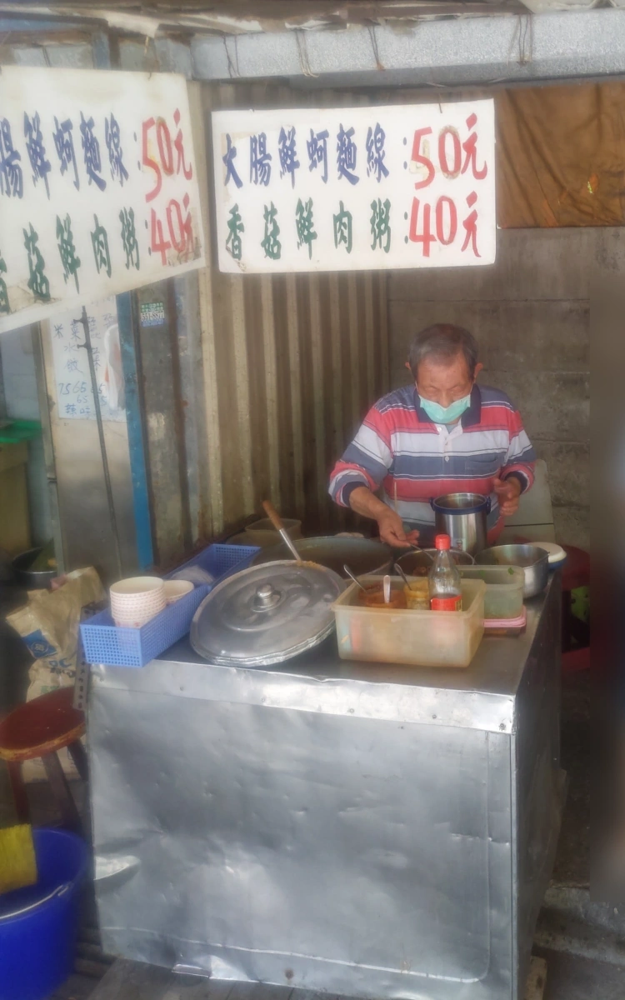
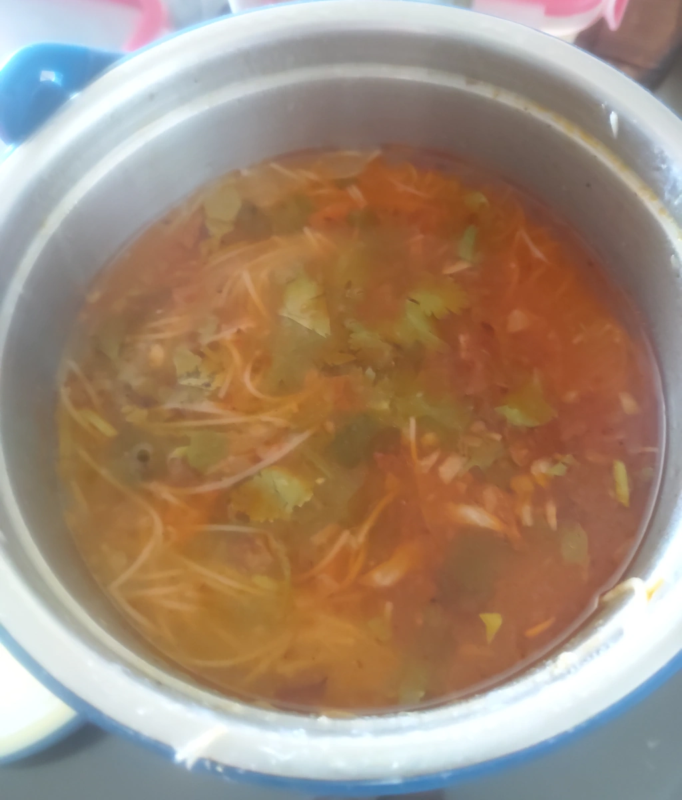

[新竹] 錦華麵線
| 餐廳名稱: | 無店名，姑且稱為 錦華麵線 |
|---|---|
| 地 址: | 錦華市場中間，錦華街素食麵店 的對面 |
| 營業時間: | 中午前賣完收攤 |
網路上偶而會蹦出一些隻字片語說 錦華市場有一攤麵線不錯，可是 Google Map 查無紀錄，更不用說照片了。 幾年前逛錦華市場時，決定找到這攤麵線，逛了一圈，也只有在小有名氣的 錦華街素食麵店 對面 找到一攤麵線。半信半疑地外帶一碗，從此一試成主顧。
麵線這種東西，是很講究個人口味的，這家錦華麵線，有合本貓口味，光顧好幾次了。店面簡陋，比較適合外帶。也有賣 香菇鮮肉粥，宣稱都是熬大骨湯煮出來的。
錦華麵線是一對老夫婦經營的，通常男老闆顧店，講話蠻風趣的。也是快退休了，但是很多客人請他繼續賣。通常不到12點，老闆就想收攤了。

本貓夫婦一向是帶容器去裝， 麵線小碗是 50 元，大碗是 75 元。
下圖因為運回家，一路搖晃，已經看不到本來浮在上面的料了。內容有大腸、蚵仔，香菜，一點黑木耳，脆脆的。 調味料加了辣椒、蒜泥、黑醋。回家後還是有攪拌幾下再吃。

祝福老闆健康平安，長命百歲，我才能繼續買錦華麵線。